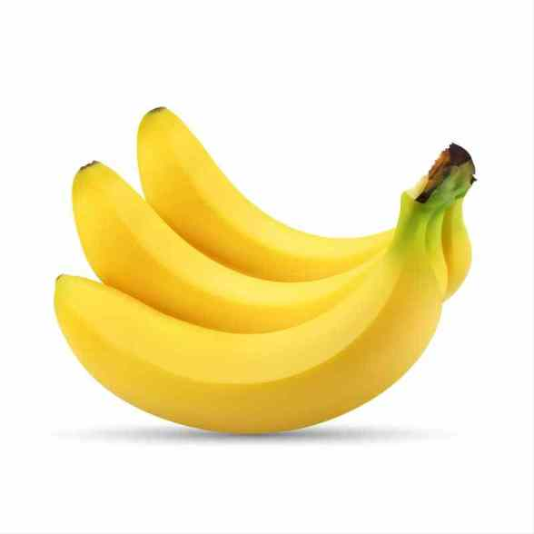

TentangBuah.com
Pisang

Pisang adalah nama umum yang diberikan pada tumbuhan terna raksasa berdaun besar memanjang dari suku Musaceae.
Beberapa jenisnya Musa acuminata, M. balbisnisa, dan M. xparadisicia menghasilkan buah konsumsi yang dinamakan sama. Buah ini tersusun dalam tandan dengan kelompok-kelompok tersusun menjari yang disebut sisir.
Buah pisang sebagai bahan pangan merupakan sumber energi (karbohidrat) dan mineral, terutama kalium.
Khasiat Pisang
- Terhindar dari penyakkit kanker
- Menurunkan resiko stroke
- Mencegah terkena diabetes
- Baik untuk jantung
- Menurunkan tekanan darah
- Baik untuk meningkatkan mood
Daftar Harga
| Jenis Pisang | Harga | |
|---|---|---|
| Per Kilo | Per Biji | |
| Pisang Kepok | 50.000 | 5.000 |
| Pisang Raja Sereh | 60.000 | 6.000 |
| Pisang Ambon | 70.000 | 7.000 |
| Pisang Seribu | 55.000 | 5.500 |